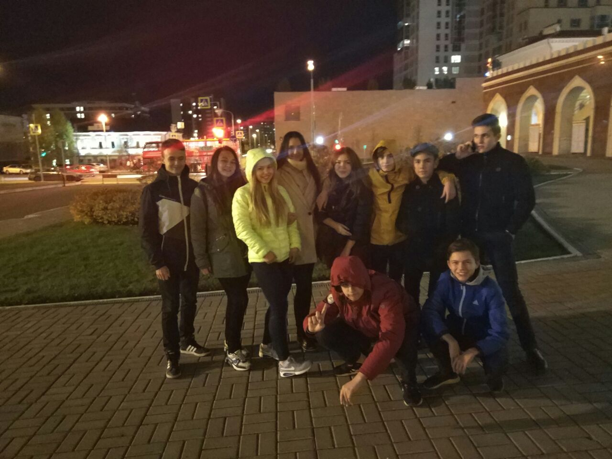
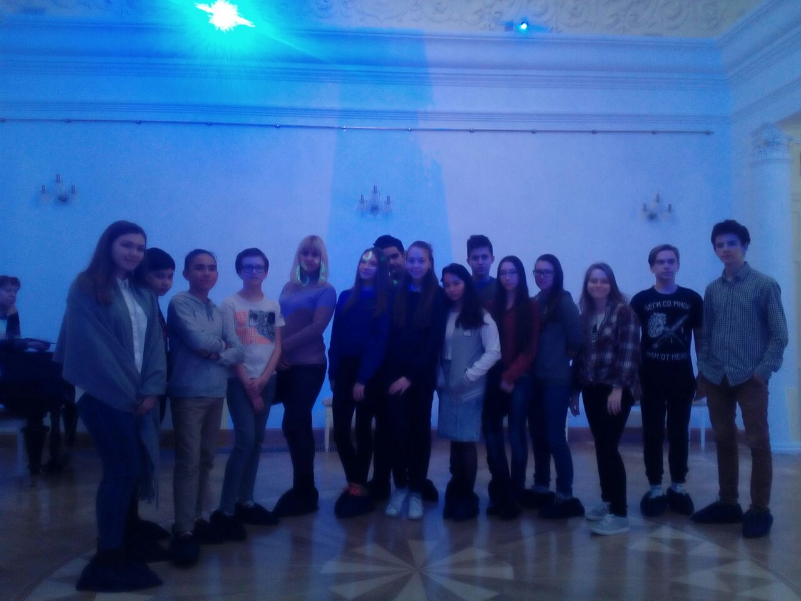
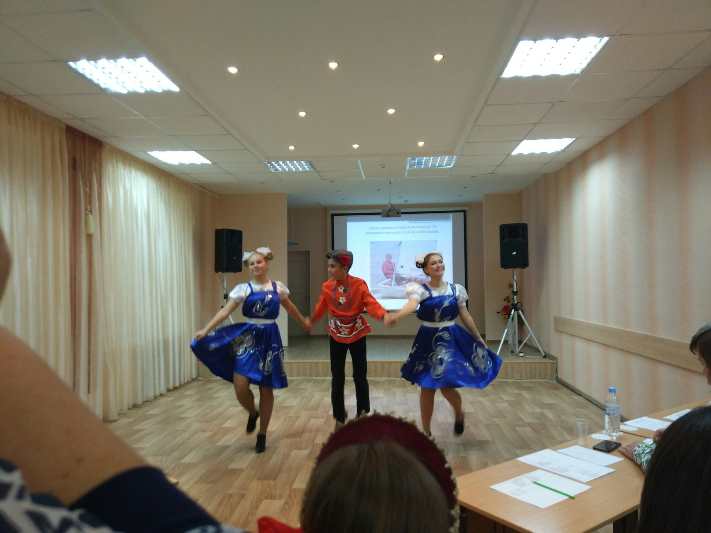
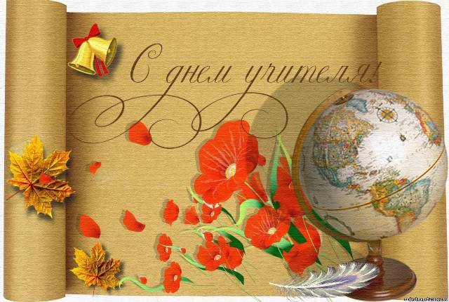
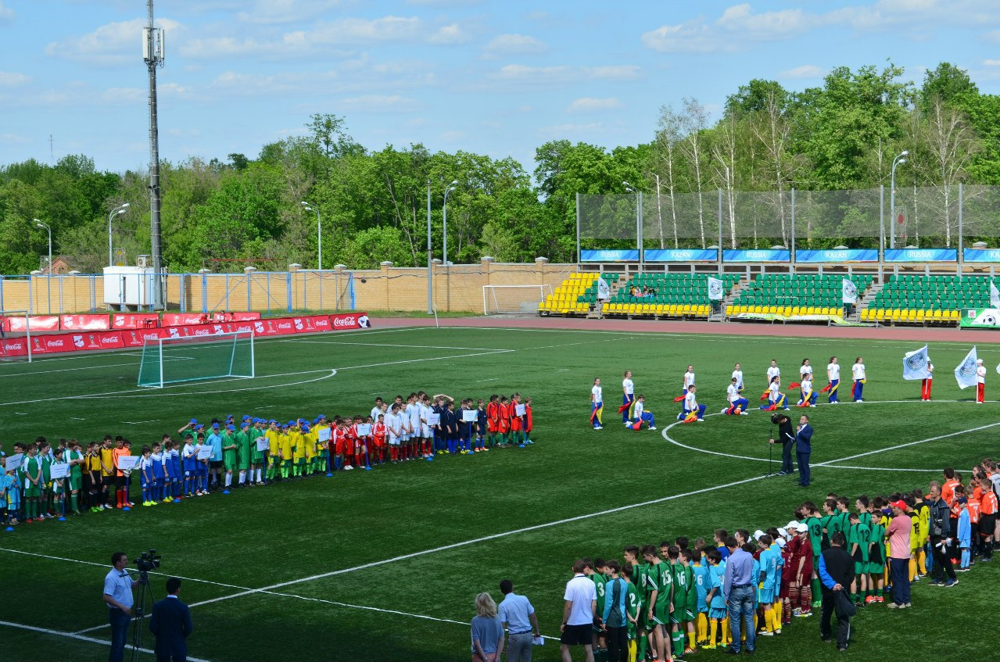
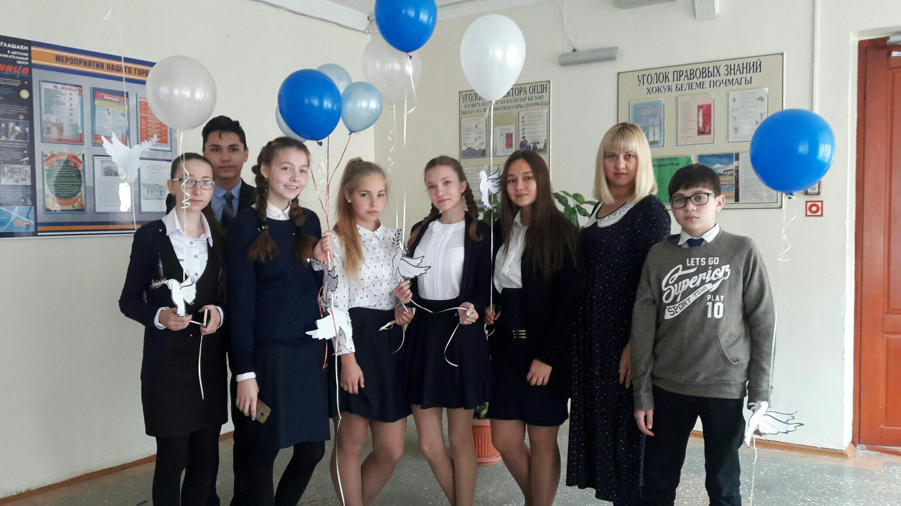
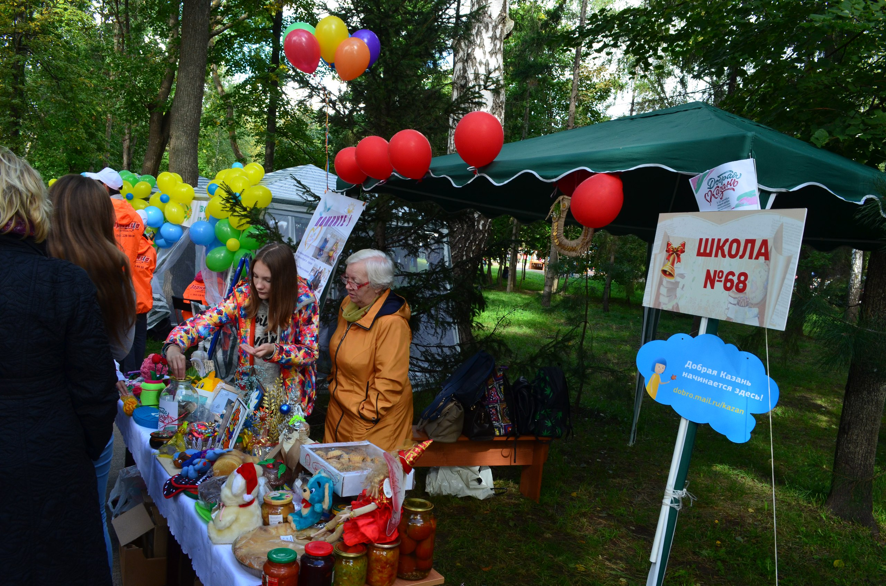

20 октября наш класс посетил Казанский Татарский Государственный Театр Юного Зрителя им. Г. Кариева. Несмотря на то,что это была комедия, затрагивались серьезные темы: патриотизм, любовь к отечеству. Представление всем очень понравилось, все остались довольны.

19 октября мы с классом ходили в литературный музей имени Евгения Боратынского. Экскурсия раскрывает основные вехи жизненного пути, творческие и духовные поиски поэта-философа Евгения Боратынского.

18 октября в ЦВР прошел конкурс "Добрый молодец и красна девица 2017". Все участники конкурса с честью представили свои творческие презентации и продемонстрировали свое мастерство в конкурсе красноречия.

5 октября в нашей школе прошел концерт, посвященный Дню Учителя! Поздравляем наших дорогих учителей и благодарим за их огромнейший труд и терпение! Желаем Вам счастья,здоровья, успехов и долгих лет жизни !

1 октября в нашей школе начинались соревнования по мини-футболу между командами старших классов и командой учителей. Пожелаем удачи нашим мальчикам, болеем за них и надеемся на хорошие результаты!

21 сентября в честь Дня Мира в школе прошла акция «Час духовности. Голубь Мира». Представители от каждого класса с шарами, к которым прикреплён голубь с именем погибшего героя войны вышли на улицу и запустили шары в воздух. В этот день жители всей планеты напоминают друг другу о важности сохранения мира на Земле.

16 сентября в Центральном парке культуры и отдыха им.Горького проходила школьная "Ярмарка добра". На благотворительной ярмарке можно было приобрести поделки и сладости, созданные учащимися районных школ. Наш класс активно принимал участие в организации сбора поделок от школы. Все вырученные средства пошли на помощь нуждающимся.
У нашего класса сменился классный руководитель!
Дорогая Валентина Александровна, спасибо вам за ваше тепло,доброту и поддержку, которую вы нам дарили на протяжении четырех лет. Мы вас очень любим!
Елена Валерьевна, желаем вам успехов с новым для вас классом. Надеемся,что мы с вами сдружимся и у нас с вами будет полное взаимопонимание!